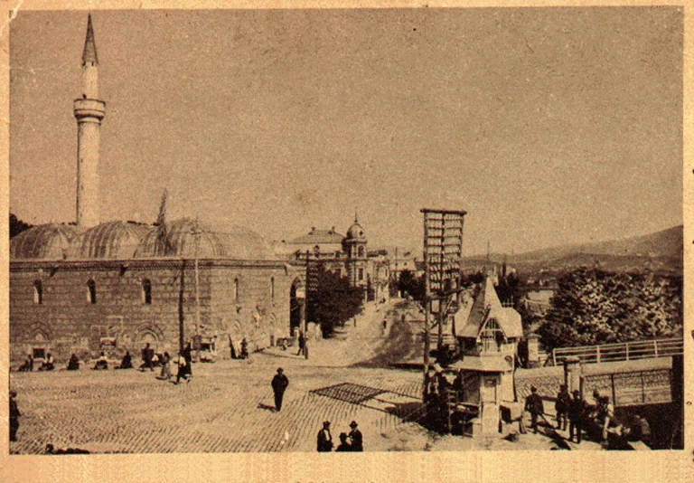
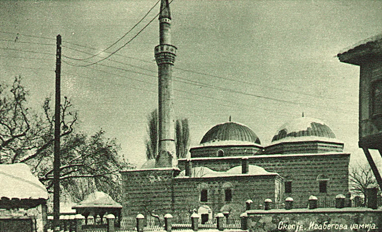

Описание
Мечеть Бурмали, снятая около середины XIX века. Единственная мечеть на правом берегу Вардара. Стояла у самого Каменного моста. Название получила по спиральному (бурмали) стволу минарета. Построена в конце XV века, снесена в 1925 году, чтобы на её месте построить Офицерский дом.

Мечеть Бурмали и несколько зданий вокруг неё. Неблагоустроенная улица. Место сбора перевозчиков товаров с воловьими упряжками. - конец XIX века

Мечеть Бурмали - 1912 - 1918 годы. Южный подход к Каменному мосту с тесно стоящими торговыми и ремесленными лавками.

Мечеть Бурмали с частью Каменного моста и набережной рядом. Слева от неё видны здания у самого въезда на Каменный мост, где размещались лавки и ремесленники. - 1910-е.

Мечеть Бурмали - начало 1920-х. Перед мостом видны первые киоски для услуг и торговли. Киоски отличаются подчёркнутой архитектурой деталей, то есть формой крыш.

Мечеть Бурмали - 1920 год.

Мечеть Хатунджук с тюрбе. На заднем плане виден минарет мечети Яхья-паши. Мечеть Хатунджук датируется 1511 годом. Её строительницей была Хани Хатун, одна из дочерей Яхья-паши. Название мечети, Хатунджук, в переводе означает «маленькая госпожа (дама)» или «барышня». - конец XIX века.

Мечеть Хаджи Балабана. Находится между Куршумли-ханом и мечетью Дуканджик. Построена в XV веке. (конец XIX века)

Бейская башня (или феодальная башня). Эта башня принадлежала какому-то бею. Она стоит перед главным входом нынешнего Дома армии Р. Македонии. Время её постройки неизвестно, но предполагается, что она возведена в конце XVII или начале XVIII века. Снимок XIX века.

Бейская башня в конце XIX века.

Бейская башня в начале XX века.

Бейская башня, 1910-е.

Старая мечеть Казанджилер рядом с Куршумли-ханом. Построена в XV веке, известна как мечеть котельщиков. (сегодня не существует)

Мечеть Дуканджик, построенная в середине XVI века.

Куршумли-хан, построенный в середине XVI века. Монументальное здание исламской светской архитектуры. Находится в старой скопской чаршии, рядом с нынешним Музеем Македонии.

Часовая башня и мечеть султана Мурада - 1920-е. Часовая башня построена в середине XVI века (1566-1572) как первая часовая башня в Османском государстве. Часовой механизм и мастер, который должен был за ним следить, привезены из Сигетвара (Венгрия) после взятия города турками. Мечеть султана Мурада: султан Мурад II, отец султана Мехмеда Завоевателя, построил её в 1436 году как свой вакф.

Мечеть султана Мурада, 1910-е.

Часовая башня и мечеть султана Мурада - 1920-е.

Часовая башня и мечеть султана Мурада - 1920-е.

Часовая башня и мечеть султана Мурада - 1920-е.

Часовая башня и мечеть султана Мурада - 1920-е.

Мечеть Гази Иса-бея - 1920-е. Построена Иса-беем, сыном Исхак-бея, как вакф после смерти отца. (XV век)

Мечеть Гази Иса-бея - 1920-е. Построена Иса-беем, сыном Исхак-бея, как вакф после смерти отца. (XV век)

Мечеть Гази Иса-бея - 1920-е. Построена Иса-беем, сыном Исхак-бея, как вакф после смерти отца. (XV век)

Мечеть Гази Иса-бея - 1920-е.

Турецкое кладбище, а на заднем плане мечеть Гази Иса-бея - 1920-е.

Мечеть Гази Иса-бея - двор - 1920-е.

Мечеть Гази Иса-бея - двор - 1920-е.

Мечеть Мустафы-паши - 1920-е. Построена в 1492 году тогдашним правителем Мустафой-пашой.

Мечеть Мустафы-паши - 1920-е. Построена в 1492 году тогдашним правителем Мустафой-пашой.

Мечеть Мустафы-паши - 1920-е.

Мечеть Мустафы-паши на заднем плане, а под ней частично видна мечеть Паши Йигит-бея, старейшая мечеть Скопье. (сегодня не существует) - 1920-е.

Улица в старой части города, а на заднем плане мечеть Исхак-бея, или мечеть Аладжа. Её построил правитель Скопье Исхак-бей (сын Паши Йигит-бея - завоевателя Скопье) в первой половине XV века, в 1438 году. Помимо мечети он построил как вакф тюрбе, медресе, конаки и другие здания исламской светской архитектуры. В 1519 году мечеть перестроил Мехмед, внук Исхак-бея, добавив два боковых нефа - 1920-е.
Ориентация

На старой ориентировочной карте
Фотоальбом


Тема
 Акведук4 открытки
Акведук4 открытки Кале30 открыток
Кале30 открыток Мосты60 открыток
Мосты60 открыток Набережная58 открыток
Набережная58 открыток Площадь46 открыток
Площадь46 открыток Здания66 открыток
Здания66 открыток Христианские храмы19 открыток
Христианские храмы19 открыток Мусульманские здания33 открытки
Мусульманские здания33 открытки Офицерский дом29 открыток
Офицерский дом29 открыток Театр28 открыток
Театр28 открыток Железнодорожный вокзал13 открыток
Железнодорожный вокзал13 открыток Школы36 открыток
Школы36 открыток Парки12 открыток
Парки12 открыток Рынки18 открыток
Рынки18 открыток Улицы38 открыток
Улицы38 открыток Панорама I60 открыток
Панорама I60 открыток Панорама II30 открыток
Панорама II30 открыток Коллажи55 открыток
Коллажи55 открыток Наводнения9 открыток
Наводнения9 открыток Землетрясение27 открыток
Землетрясение27 открыток Скопье 200026 открыток
Скопье 200026 открыток